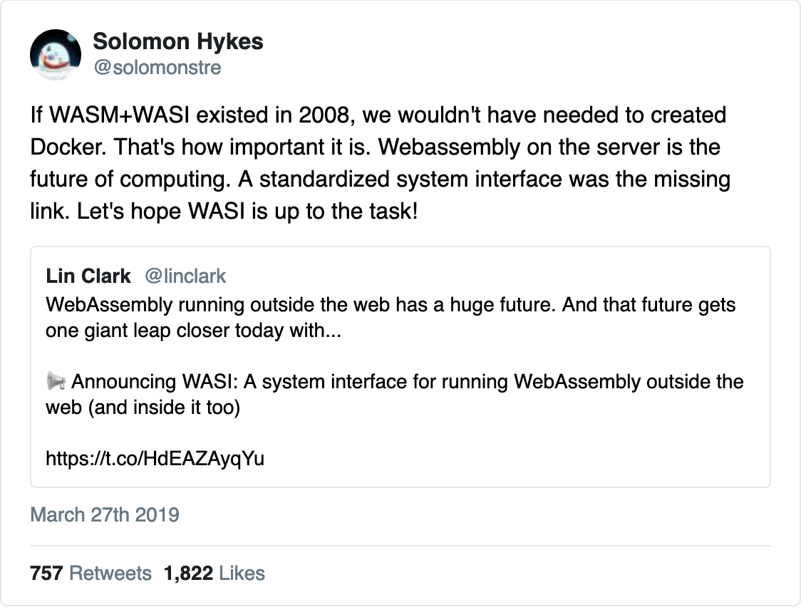
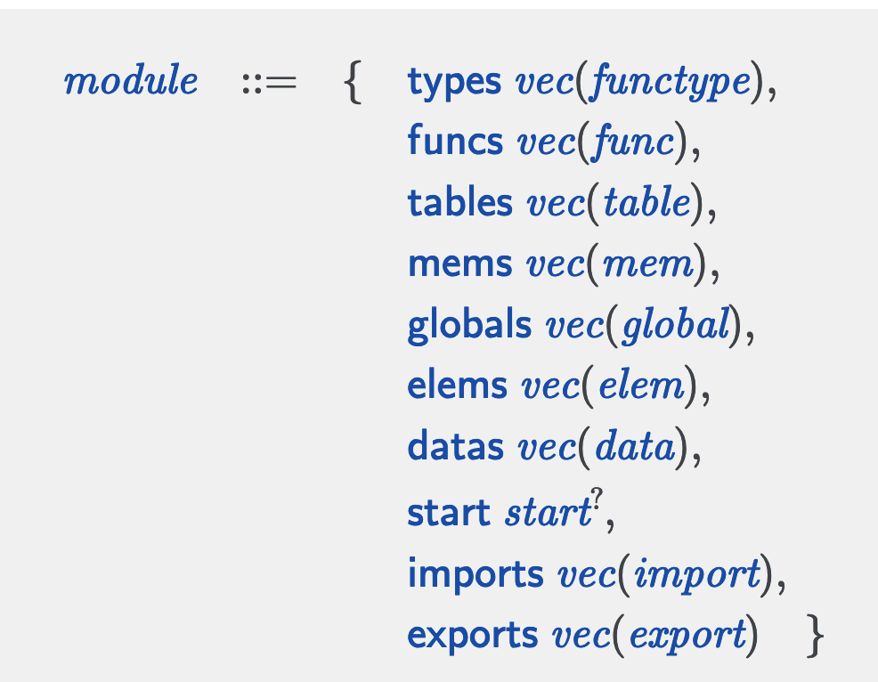
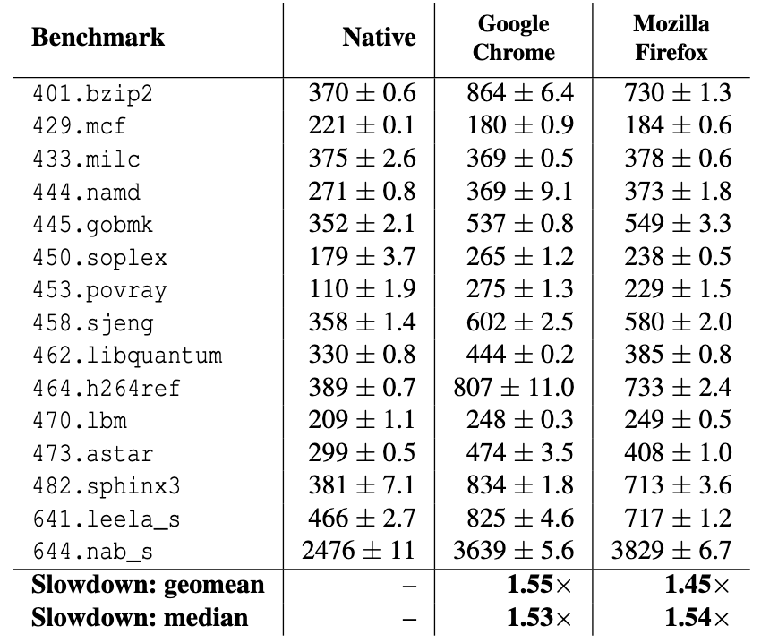

class: middle, center # Oops! I replaced containers with WebAssembly <img style="border-radius: 50px" src="https://www.gravatar.com/avatar/67644641ead7ae60a795a14b7e102973?s=100" alt="Weihang Lo"> <a href="https://github.com/weihanglo">@weihanglo</a> --- class: top, center ## Is it real? [](https://twitter.com/solomonstre/status/1111004913222324225) --- ## What are today's objective? - Know what WebAssembly is - Know what WebAssembly isn't - Know what WebAssembly can - Know what WebAssembly cannot --- ## Is Wasm an assembly? Yes! - A binary instruction format for a virtual machine - A compilation target: LLVM to Wasm - [With well-defined specifications][core spec] <img width="65%" src="https://hacks.mozilla.org/files/2017/02/04-02-langs08-768x501.png"> Ref: [@linclark](https://twitter.com/linclark) --- ## Is Wasm an assembly? ```wasm (func (param $p i32) (result i32) local.get $p local.get $p i32.add) ``` ```wasm (module (import "js" "memory" (memory 1)) (import "js" "table" (table 1 funcref)) (type $void_to_i32 (func (result i32))) (func (export "doIt") (result i32) i32.const 0 i32.const 42 i32.store ;; store 42 at address 0 i32.const 0 call_indirect (type $void_to_i32)) ) ``` --- ## You mentioned VM. Is Wasm a VM? Yes! - ❌ A duplication of a computer system - ✅ A managed programming runtime environment  --- ## You mentioned VM. Is Wasm a VM? - 👌 Portability\*: Write once. ~~Debug~~ Embed anywhere. - 👌 Security: VM controls the environment. - 🚀 Performance: Faster runtime and startup time. - 🚀 More security: Everything is an import. \*: [Assumptions apply] --- ### [`binop` execution](https://webassembly.github.io/spec/core/exec/instructions.html#t-mathsf-xref-syntax-instructions-syntax-binop-mathit-binop)  --- ### Definition of [`modules`]  --- ## What really is Wasm? Assembly / Instruction Set ### + Execution (with an implementation) > Types, values, instructions, executions. All these are defined in [core spec]. --- ## Sounds like a JVM. Why faster? - 👍 Codegen and optimization via modern compiler backend. - 👍 Stream-line, parallelized parsing and decoding = [fast startup time] - 👍 No GC. You got the whole linear address space. - 👎 Actually it is [not so fast]. - 👎 Maybe just [equally fast] when [comparing with JavaScript].  <em style="font-size:8px">Jangda, A., Powers, B., Berger, E. D., & Guha, A. (2019). Not so fast: Analyzing the performance of webassembly vs. native code. In 2019 {USENIX} Annual Technical Conference ({USENIX}{ATC} 19) (pp. 107-120).</em> --- ## What about the security part? This is the part that Wasm really shines! - Has no system call - Has no API - Shared-nothing in mind The only way to communicate with outside world is: <center><h3>Module Imports<h3></center> Like [Linux capabilities] but need to define your own capabilites. --- ## So far, we know WebAssembly **... is** - an ISA with both text and binary format - an execution of its instructions **... is not** - a virtual machine that duplicates the whole OS - a crypto scheme <img width="50%" src="https://i.imgur.com/o40IwP7.png"> _Image credit: https://coinsutra.com/bitcoin-ponzi-scheme/_ --- class: middle, center ## Wait. No API no syscall? ## That's totally useless! Indeed. But we have module imports. --- ## You mean an interface? Exactly. There are some embedding interfaces specs: - [JavaScript API]: Define how to export and import JavaScript objects and environments. - [WASI - WebAssembly System Interface]: "System calls" for WebAssembly, including filesystem, sockets, etc. <img width="70%" src="https://github.com/WebAssembly/WASI/blob/41d8c27/docs/wasi-software-architecture.png?raw=true"> --- ## So, we need to impl WASI for different archs on our own? Not really. You can choose a runtime and use it directly. [<img width="200px" src="https://avatars.githubusercontent.com/u/54038801?s=600">](https://wasmtime.dev/) [<img width="200px" src="https://v8.dev/_img/v8-outline.svg">](https://v8.dev/) [<img width="200px" src="https://avatars.githubusercontent.com/u/44205449?s=600">](https://wasmer.io) [<img width="200px" src="https://wavm.github.io/images/WAVM.svg">](https://wavm.github.io) [<img width="200px" src="https://avatars.githubusercontent.com/u/83329692?s=600">](https://wasmedge.org/) [<img width="200px" src="https://avatars.githubusercontent.com/u/58013131?s=600">](https://github.com/wasm3/wasm3) --- ## Stop. Give me a [real world demo!] <iframe loading="lazy" width="100%" height="500" src="https://sandspiel.club/#a101f87128ec0fa41c4f"></iframe> --- ## Is this Wasm on the web? AutoCAD uses emscripten to [port 35 years old native application to the web]  --- ## Is this Wasm on the web? [Adobe Photoshop on the web]  --- ## Is this Wasm on the web? [OpenCV.js] <img width="100px" src="https://opencv.org/wp-content/uploads/2020/07/cropped-OpenCV_logo_white_600x.png"> [TensorFlow: WebGPL + Wasm = tfjs]  --- ## Is this Wasm on the web? [Pyodide: Scientific computing entire in your browser] [](https://alpha.iodide.io/notebooks/300/) --- ## Is this Wasm on the web? [Doom]. Yes. You read it right. [Doom]! <iframe loading="lazy" width="100%" height="500" src="https://silentspacemarine.com/"></iframe> --- ## Is this Wasm on the web? [And Flash is back!] <iframe loading="lazy" width="100%" height="400" src="https://ruffle.rs/demo/"></iframe> --- ## Is this Wasm on the web? - Games - Audio. Video. Graphics - Machine learning and scientific Computing - Web frameworks in other programming languages (C#, Rust) - Any compute-intensive apps - Just porting C/C++ project to the web and boom! ( - mostly via [Emscripten] - Storage and rendering still need some rewrites and glue code with Web API - OpenGL to WebGL - POSIX API to IndexedDB or web file APIs --- ## What about outside the web? Edge and distributed computing. But why Cloud Native WebAssembly? - Fast startup and small footprint - Wasm engine is small and simple to optimize - Security (built-in sandboxing) <img height="24px" src="https://upload.wikimedia.org/wikipedia/commons/thumb/8/8a/Fastly_logo.svg/320px-Fastly_logo.svg.png"> [Compute@Edge] - Every request is a code start of a Wasm runtime within 50ms <img height="24px" src="https://github.com/wasmCloud/branding/blob/main/02.Horizontal Version/Vector/SVG/Wasmcloud.Logo-Hrztl_Color.svg?raw=true"> [OTP Wasm computing platform] - Introduce [waPC], a protocol of procedural calls between native hosts and Wasm guests. <img height="24px" src="https://www.secondstate.io/assets/img/logo.png"> [FaaS] - Has its own [WasmEdge] runtime, which is a CNCF project since earlier this year. --- ## What about outside the web? [Krustlet: Flee from a gigantic platform to the other] - Replace kubelet and run WebAssembly workload inside Kubernetes - [wasm-to-oci] uses OCI registries to distribute Wasm modules  --- ## What about outside the web? Suitable for blockchain and smart contract VM - Memory-safe. Sandboxed. Secure. - Langugage-indenpendant. Write smart contracts with any language you like - Wasm is well-defined. No need to reinvent the wheel for another sandboxed VM. - Deterministic\*. <img height="30px" src="https://polkadot.network/assets/img/logo-polkadot.svg"> <img height="50px" src="https://i.imgur.com/zvhqxXk.png"> <img height="60px" src="https://i.imgur.com/MIm4tYK.png"> \*: [Terms apply] --- ## What about outside the web? Actually, the line between web and non-web is getting vaguer. - Edge computing and serverless - Blockchain. Smart contract. - Embedded environment - Any dedicated computing engine - Policy engine: [Kubewarden], [Open Policy Agent] - Http filters: [Envoy] - Run pre-compiled code to speed up compile: [Watt] --- ## Can I replace containers with Wasm? No. Not in the near feature. Take resources control for example, container has cgroup and namespaces, whereas Wasm lacks for fine-grained system resource managemnet. Also, Wasm is under rapid devlopement. Feature like [Component Model], which provides module linking without host initiation, has not yet stabilized. Without proper interfaces between system and Wasm modules, writing Wasm for impure computation workload would still be in flux. After all, they serves for different purposes in design at first. --- ## References - [WebAssembly.org](https://webassembly.org/) - [InfoQ: Lin Clark on the WebAssembly Component Model](https://www.infoq.com/podcasts/web-assembly-component-model/) - [WebAssembly: Here Be Dragons @ 2015 LLVM Developer’s Meeting](https://llvm.org/devmtg/2015-10/slides/BastienGohman-WebAssembly-HereBeDragons.pdf) - [Made with WebAssembly](https://madewithwebassembly.com/) [core spec]: https://webassembly.github.io/spec/core/ [Assumptions apply]: https://webassembly.org/docs/portability/#assumptions-for-efficient-execution [`modules`]: https://webassembly.github.io/spec/core/syntax/modules.html [`binop` execution]: https://webassembly.github.io/spec/core/exec/instructions.html#t-mathsf-xref-syntax-instructions-syntax-binop-mathit-binop [fast startup time]: https://www.fastly.com/blog/how-compute-edge-is-tackling-the-most-frustrating-aspects-of-serverless [not so fast]: https://www.usenix.org/conference/atc19/presentation/jangda [equally fast]: https://www.youtube.com/watch?v=njt-Qzw0mVY&t=1064s [comparing with JavaScript]: https://surma.dev/things/js-to-asc/ [Linux capabilities]: https://man7.org/linux/man-pages/man7/capabilities.7.html [JavaScript API]: https://webassembly.github.io/spec/js-api/index.html [WASI - WebAssembly System Interface]: https://wasi.dev/ [real world demo!]: https://sandspiel.club/#a101f87128ec0fa41c4f [port 35 years old native application to the web]: https://blogs.autodesk.com/autocad/autocad-web-app-google-io-2018/ [Adobe Photoshop on the web]: https://web.dev/ps-on-the-web/ [Emscripten]: https://emscripten.org [OpenCV.js]: https://docs.opencv.org/3.4/d4/da1/tutorial_js_setup.html [TensorFlow: WebGPL + Wasm = tfjs]: https://github.com/tensorflow/tfjs [Pyodide: Scientific computing entire in your browser]: https://hacks.mozilla.org/2019/04/pyodide-bringing-the-scientific-python-stack-to-the-browser/ [Doom]: https://silentspacemarine.com/ [And Flash is back!]: https://ruffle.rs/ [Compute@Edge]: https://www.fastly.com/products/edge-compute/serverless [OTP Wasm computing platform]: https://wasmcloud.com/ [waPC]: https://wapc.io/ [FaaS]: https://www.secondstate.io/ [WasmEdge]: https://wasmedge.org/ [Krustlet: Flee from a gigantic platform to the other]: https://krustlet.dev/ [wasm-to-oci]: https://github.com/engineerd/wasm-to-oci [Terms apply]: https://github.com/WebAssembly/design/blob/e2be77e/Nondeterminism.md [Kubewarden]: https://www.kubewarden.io/ [Open Policy Agent]: https://www.openpolicyagent.org/docs/latest/wasm/ [Envoy]: https://www.envoyproxy.io/docs/envoy/latest/configuration/http/http_filters/wasm_filter [Watt]: https://github.com/dtolnay/watt [Component Model]: https://github.com/WebAssembly/component-model/tree/initial-contents